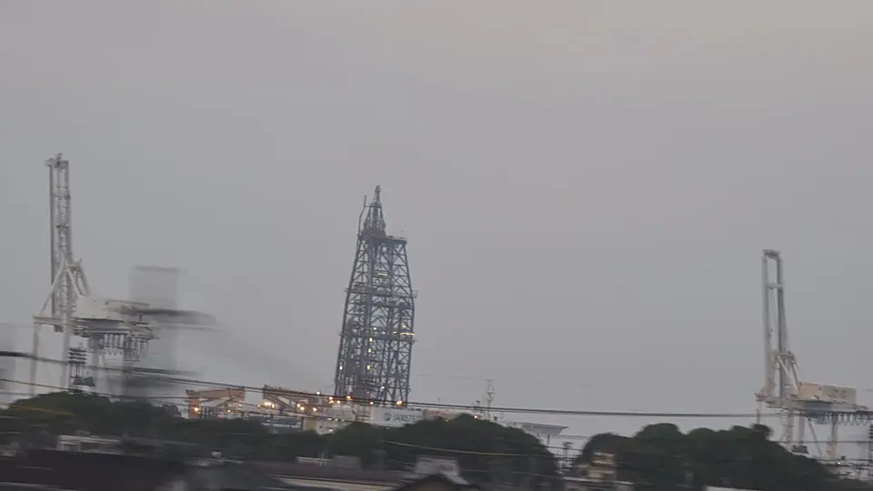
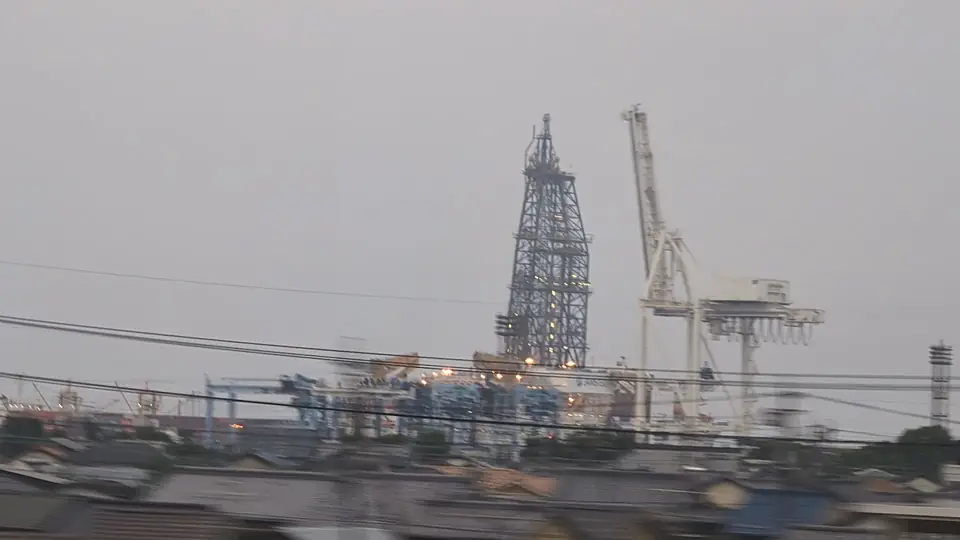
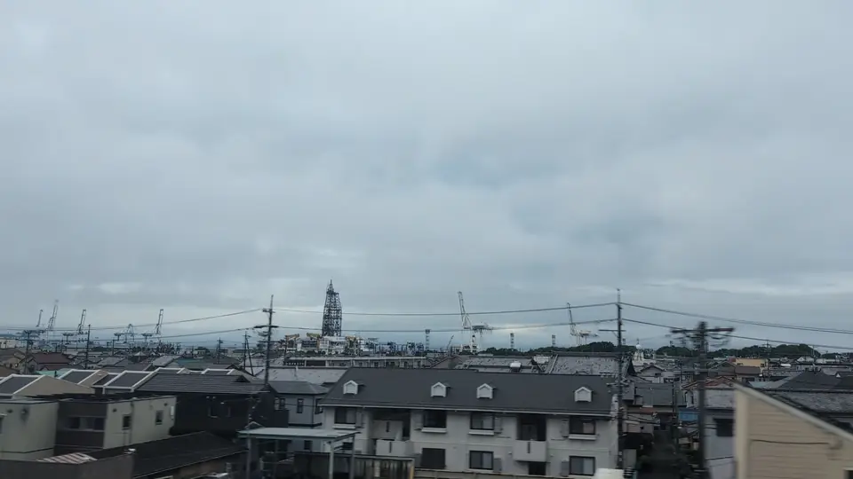

- 見える区間
- 新富士 → 静岡
- 座席側
- A席・海側
- タイミング
- 東京発のぞみ基準で約50分後
- 写真
- 5 枚
「ちきゅう」はどんな船？
「ちきゅう」は、JAMSTECが運航する国内唯一の大型科学掘削船です。全長210m、幅38m、船体中央から突き出す白い掘削やぐら（デリック）は基準海面上約70mに達し、海底から見た全高では120m級と、外洋船としては特異な姿をしています。石油掘削船と同じ「ライザー掘削」方式を採用し、水深2,500m級の海域で、海底面下7,000mまで掘り抜くことができます。石油探査ではなく、地球科学のための掘削を目的に設計された、世界的にも極めて数の少ない専用船です。
もっと見る: JAMSTEC: 地球深部探査船「ちきゅう」JAMSTEC: ちきゅう 主なミッション清水港: 地球深部探査船「ちきゅう」静岡市: 清水港
東京から新大阪方面へ向かう場合は、新富士 → 静岡が近づいたらA席・海側の窓を少し早めに見てください。新大阪から東京方面へ向かう場合は、通過順が逆になります。
何のために掘っている？
「ちきゅう」の代表的なミッションのひとつが、南海トラフ地震発生帯掘削計画（NanTroSEIZE）です。紀伊半島沖の海底下深部に眠るプレート境界を実際に掘り、地震のしくみを直接調べようという世界初の試みで、掘削孔内に設置した長期観測装置（LTBMS）は今もリアルタイムで地震・地殻変動データを送り続けています。東北地方太平洋沖地震（東日本大震災）の後には、日本海溝の断層帯を掘削し、巨大地震で断層がどのようにずれたかを直接調べる調査（JFAST）も実施しました。
地球史の研究でも重要な成果を上げています。西部太平洋の海底下から採取した堆積物・岩石コアは、過去数千万年〜数億年の環境変動や大量絶滅の記録を保存しており、恐竜絶滅の原因となったユカタン半島沖の巨大隕石衝突クレーターの掘削にも参加しました。近年は、海底下深部に生命がどこまで存在するかを探る「深部生命圏（deep biosphere）」の研究でも先端を走っています。
清水港は、こうした長期航海の合間に「ちきゅう」が寄港・整備を受ける母港のひとつです。船体のスケールと運用の規模感を、車窓から一瞬でも感じられるのは貴重な機会と言えます。
位置の目安
地図をひらくスポット位置と、新幹線から見る位置を切り替えられます。
清水港とちきゅうを見逃さないコツ
1. 先に見る方向を決める
新富士 → 静岡が近づいたら、A席・海側の窓を先に意識してください。現在地から追う場合はライブガイド、事前に確認する場合はこのページの地図が役立ちます。
はっきり見えるのは数秒ほど。案内が出てからカメラを探すより、先に座席側と窓の方向を決めておくと拾いやすくなります。
2. 見どころ
新富士を過ぎたら、A席側の遠くに港のクレーン群を探してください。ずらりと並ぶ細長いクレーンの合間に、頭に白い格子状のやぐらを載せた船があれば、それが「ちきゅう」です。港にいない日もあるので、いなくても気を落とさず、清水の港湾工業景として楽しむのがおすすめです。
写真で見る清水港とちきゅう



 関連
左富士
関連
左富士
 関連
静岡の茶畑
関連
静岡の茶畑
 関連
掛川城
関連
掛川城